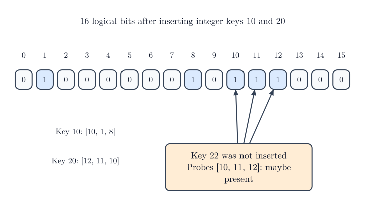
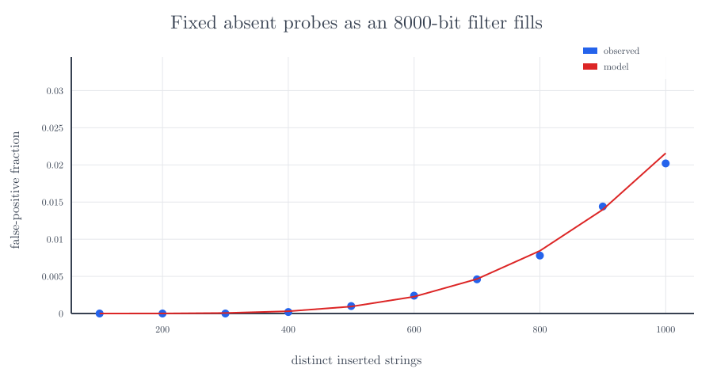
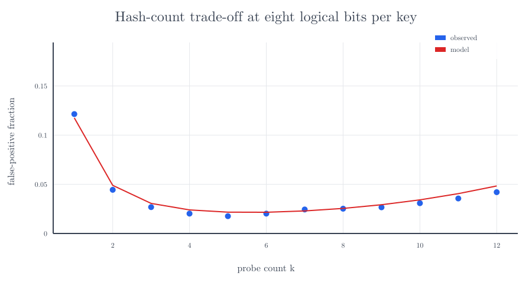

Bloom Filters: Exact Rejection, Approximate Membership
Abstract
Reject absent keys cheaply while retaining a compact summary of a set. A Bloom filter stores probe bits rather than original keys: a clear queried bit proves absence, while an all-set query requires an exact backing-set check. We inspect a sixteen-bit example, retain the original 8,000-bit load experiment, and compare measured false positives with the usual sizing approximation. The core now packs its bits, exposes its actual probes and uses the standard FNV-1a string basis. The probability formula is a model; the no-false-negative property follows directly from the insert/query operations.
The method
For a uint64 key x, compute a mixed base h1 and odd step h2, then use k positions. The implementation's precise arithmetic is
Insertion sets those bits. Query uses the same mixer and position function and returns false when any probed bit is clear. Since later insertions only set bits, an inserted key continues to have every probe set. This proves no false negatives for a correctly used, insertion-only instance, independently of the quality or independence of the hashes. Duplicate insertions are idempotent; there is no erase.
The two deterministic mixes use the SplitMix64 transformation. An odd step does not guarantee distinct probes for every m, and uint64 wrapping before reduction matters when m does not divide 2^64. Inspection uses the same probe calculation as insertion and query. Positive membership is evidence to consult the exact set, rather than a guarantee that the original item was inserted.
Simple example: five set bits, one false positive
With m=16 and k=3, insert integer keys 10 and 20. Their probe lists are [10,1,8] and [12,11,10]. The union has five set bits. Uninserted key 22 probes [10,11,12], all already set, so it is a concrete false positive. Key 0 probes [15,4,9], including clear bits, so it is correctly rejected.
#include <dm/dm.hpp>
int main() {
std::filesystem::create_directories("build");
dm::algorithms::BloomFilter filter(16,3);filter.add(10);filter.add(20);
dm::graphics::Diagram diagram(65,1100);
dm::graphics::DiagramNodeStyle bit;bit.width=.52;bit.height=.6;bit.font_size=16;bit.padding=4;
for (int p=0;p<filter.num_bits();++p) {
bit.fill=filter.bit_is_set(p)?dm::RGB{219,234,254}:dm::RGB{248,250,252};
diagram.node(std::format("b{}",p),{.65*p,0},filter.bit_is_set(p)?"1":"0",bit)
.text({.65*p,.75},std::to_string(p),16);
}
dm::graphics::DiagramNodeStyle query;query.width=4.5;query.height=1.2;query.fill={255,237,213};
diagram.node("query",{6.6,-2.7},std::format("Key 22 was not inserted\nProbes {}: maybe present",filter.probe_positions(22)),query);
for (int p:filter.probe_positions(22)) diagram.edge("query",std::format("b{}",p));
diagram.text({4.875,1.8},"16 logical bits after inserting integer keys 10 and 20")
.text({1.9,-1.6},std::format("Key 10: {}",filter.probe_positions(10)),16)
.text({1.9,-2.5},std::format("Key 20: {}",filter.probe_positions(20)),16);
diagram.save_svg("build/bloom_bits.svg");
}
#include <dm/dm.hpp>
int main() {
dm::algorithms::BloomFilter filter(16,3);filter.add(10);filter.add(20);
std::print("Logical set bits: {}; fill: {:.4f}; packed payload: {} bytes.\n\n",
filter.num_set_bits(),filter.fill_ratio(),filter.storage_bytes());
std::print("| integer key | actually inserted | probe positions | probe bit values | query result |\n"
"| ---: | :--- | :--- | :--- | :--- |\n");
for (std::uint64_t key:{10,20,22,0}) {
const auto positions=filter.probe_positions(key);std::vector<int> values;
for (int p:positions) values.push_back(filter.bit_is_set(p));
std::print("| {} | {} | {} | {} | {} |\n",key,key==10||key==20,positions,values,filter.maybe_contains(key));
}
}Logical set bits: 5; fill: 0.3125; packed payload: 8 bytes.
| integer key | actually inserted | probe positions | probe bit values | query result |
|---|---|---|---|---|
| 10 | true | [10, 1, 8] | [1, 1, 1] | true |
| 20 | true | [12, 11, 10] | [1, 1, 1] | true |
| 22 | false | [10, 11, 12] | [1, 1, 1] | true |
| 0 | false | [15, 4, 9] | [0, 0, 0] | false |
Deriving the sizing approximation
Under independent uniform placement, one fixed bit remains clear after kn placements with probability \((1-1/m)^{kn}\). Approximating this by \(e^{-kn/m}\), and treating the k queried bits as independent, gives
The first finite-placement marginal is exact under that placement model. Raising the fill probability to k adds an independence approximation; it is not an exact finite-filter probability. Deterministic double hashing, repeated positions and string-key distributions add further departures. Here n means distinct keys, not repeated calls to add; the filter does not store an insertion count.
Writing \(r=m/n\) and \(t=k/r\), differentiation of the model's log gives \(\log(1-e^{-t})+t/(e^t-1)=0\), with its minimum at t=ln(2). Thus the continuous rule is
The API rounds that k to an integer and clamps it to at least one; for an empty
design load it returns one. This is a sizing rule, not an exact optimisation for
the implemented wrapped probes. The model calculation uses expm1 to avoid
subtracting nearly equal numbers at light load.
Original experiment: 1,000 strings and 5,000 absent probes
Retain m=8,000, target n=1,000, rounded k=6, and ten batches of 100 inserted strings key0,...,key999. Each batch queries the same 5,000 different absent strings absent0,...,absent4999. Those are deterministic synthetic inputs; fractions describe this probe set and do not certify a population error rate. Reusing probes across batches also correlates the displayed measurements.
The original string helper used a nonstandard FNV offset basis. It is now standard 64-bit FNV-1a, verified against RFC 9923 vectors including trailing NUL bytes. String hashes and these observed counts therefore change; applications retaining hashes from the old helper must rebuild them. The probe mapping for already supplied integer keys is unchanged.
#include <dm/dm.hpp>
int main() {
std::filesystem::create_directories("build");
using dm::algorithms::bloom_hash64;
const int k=dm::algorithms::BloomFilter::optimal_num_hashes(8000,1000);
dm::algorithms::BloomFilter filter(8000,k);
std::vector<double> load,observed,model;
std::print("m = {}; k = {}; payload = {} bytes; absent probes per batch = 5000.\n\n",
filter.num_bits(),k,filter.storage_bytes());
std::print("| distinct inserts | false positives / 5000 | observed fraction | model fraction | set bits |\n"
"| ---: | :--- | ---: | ---: | ---: |\n");
for (int batch=0;batch<10;++batch) {
for (int i=0;i<100;++i) filter.add(bloom_hash64("key"+std::to_string(batch*100+i)));
const int n=(batch+1)*100;int fp=0;
for (int i=0;i<5000;++i) fp+=filter.maybe_contains(bloom_hash64("absent"+std::to_string(i)));
for (int i=0;i<n;++i) if (!filter.maybe_contains(bloom_hash64("key"+std::to_string(i)))) return 1;
const double measured=fp/5000.,predicted=filter.expected_false_positive_rate(n);
load.push_back(n);observed.push_back(measured);model.push_back(predicted);
std::print("| {} | {} / 5000 | {:.6f} | {:.6f} | {} |\n",n,fp,measured,predicted,filter.num_set_bits());
}
const double ymax=1.6*std::max(*std::max_element(observed.begin(),observed.end()),model.back());
dm::graphics::RPlot::create()
.points(load,observed,"observed",dm::RGB{37,99,235},5)
.lines(load,model,"model",dm::RGB{220,38,38},2)
.title("Fixed absent probes as an 8000-bit filter fills")
.x_label("distinct inserted strings").y_label("false-positive fraction")
.y_limits(0,ymax).size(900,480).save_svg("build/bloom_load.svg");
}m = 8000; k = 6; payload = 1000 bytes; absent probes per batch = 5000.
| distinct inserts | false positives / 5000 | observed fraction | model fraction | set bits |
|---|---|---|---|---|
| 100 | 0 / 5000 | 0.000000 | 0.000000 | 578 |
| 200 | 0 / 5000 | 0.000000 | 0.000007 | 1125 |
| 300 | 0 / 5000 | 0.000000 | 0.000067 | 1619 |
| 400 | 1 / 5000 | 0.000200 | 0.000303 | 2079 |
| 500 | 5 / 5000 | 0.001000 | 0.000935 | 2506 |
| 600 | 12 / 5000 | 0.002400 | 0.002264 | 2880 |
| 700 | 23 / 5000 | 0.004600 | 0.004643 | 3260 |
| 800 | 39 / 5000 | 0.007800 | 0.008436 | 3605 |
| 900 | 72 / 5000 | 0.014400 | 0.013985 | 3915 |
| 1000 | 101 / 5000 | 0.020200 | 0.021577 | 4206 |

Checking the sizing rule across hash counts
Additional probes initially reduce accidental positives; increased occupancy eventually dominates. The following reconstructs the filter for each k=1,...,12, with the same 1,000 inserted and 5,000 absent strings. The model's rounded choice is six. Finite observed minima can differ, and this shared synthetic probe set does not measure a universal best setting.
#include <dm/dm.hpp>
int main() {
std::filesystem::create_directories("build");
using dm::algorithms::bloom_hash64;
std::vector<double> hashes,observed,model;
std::print("| k | false positives / 5000 | observed fraction | model fraction | fill ratio |\n"
"| ---: | :--- | ---: | ---: | ---: |\n");
for (int k=1;k<=12;++k) {
dm::algorithms::BloomFilter filter(8000,k);
for (int i=0;i<1000;++i) filter.add(bloom_hash64("key"+std::to_string(i)));
int fp=0;
for (int i=0;i<5000;++i) fp+=filter.maybe_contains(bloom_hash64("absent"+std::to_string(i)));
hashes.push_back(k);observed.push_back(fp/5000.);model.push_back(filter.expected_false_positive_rate(1000));
std::print("| {} | {} / 5000 | {:.6f} | {:.6f} | {:.6f} |\n",k,fp,observed.back(),model.back(),filter.fill_ratio());
}
const double ymax=1.6*std::max(*std::max_element(observed.begin(),observed.end()),*std::max_element(model.begin(),model.end()));
dm::graphics::RPlot::create()
.points(hashes,observed,"observed",dm::RGB{37,99,235},5)
.lines(hashes,model,"model",dm::RGB{220,38,38},2)
.title("Hash-count trade-off at eight logical bits per key")
.x_label("probe count k").y_label("false-positive fraction")
.y_limits(0,ymax).size(900,480).save_svg("build/bloom_hash_count.svg");
}| k | false positives / 5000 | observed fraction | model fraction | fill ratio |
|---|---|---|---|---|
| 1 | 607 / 5000 | 0.121400 | 0.117503 | 0.119625 |
| 2 | 222 / 5000 | 0.044400 | 0.048929 | 0.223125 |
| 3 | 134 / 5000 | 0.026800 | 0.030579 | 0.312375 |
| 4 | 101 / 5000 | 0.020200 | 0.023969 | 0.392875 |
| 5 | 88 / 5000 | 0.017600 | 0.021679 | 0.462625 |
| 6 | 101 / 5000 | 0.020200 | 0.021577 | 0.525750 |
| 7 | 122 / 5000 | 0.024400 | 0.022930 | 0.582125 |
| 8 | 126 / 5000 | 0.025200 | 0.025492 | 0.628750 |
| 9 | 133 / 5000 | 0.026600 | 0.029224 | 0.671625 |
| 10 | 154 / 5000 | 0.030800 | 0.034191 | 0.707500 |
| 11 | 178 / 5000 | 0.035600 | 0.040509 | 0.739375 |
| 12 | 210 / 5000 | 0.042000 | 0.048326 | 0.771000 |

A finite counterexample to an exact probability claim
One logical bit is enough to expose the distinction. After inserting any key, every probe of every absent key addresses that same set bit, so the false-positive probability is one. The independent-hash approximation is below one for finite n=1. Repeated insertion of that same key changes neither the state nor the load.
#include <dm/dm.hpp>
int main() {
std::print("| one-bit probe count | set bits after 100 copies of key 42 | absent key 99 tests positive | model at one distinct key |\n"
"| ---: | ---: | :--- | ---: |\n");
for (int k:{1,3,10}) {
dm::algorithms::BloomFilter filter(1,k);
for (int i=0;i<100;++i) filter.add(42);
if (filter.num_set_bits()!=1 || !filter.maybe_contains(99)) return 1;
std::print("| {} | {} | {} | {:.6f} |\n",k,filter.num_set_bits(),filter.maybe_contains(99),filter.expected_false_positive_rate(1));
}
}| one-bit probe count | set bits after 100 copies of key 42 | absent key 99 tests positive | model at one distinct key |
|---|---|---|---|
| 1 | 1 | true | 0.632121 |
| 3 | 1 | true | 0.857952 |
| 10 | 1 | true | 0.999546 |
Conclusion
The sixteen-bit example separates exact rejection from a concrete false positive. The original experiment now shows current, standards-based string hashes and actual packed storage. The load and hash-count sweeps test the model's role as a sizing approximation, while the one-bit counterexample states its limit.
Insert and query cost O(k), with early rejection for a clear query bit. Set-bit count and fill are O(1), maintained on zero-to-one transitions. The packed payload uses \(64\lceil m/64\rceil\) bits, plus object/allocation overhead, rather than the previous byte per logical bit. Dimensions and queried bit coordinates are checked. Native tests compare packed words with a boolean-array oracle across word boundaries, duplicates, copies and saturation, and verify official FNV vectors.
No observed dataset is required for these set invariants. Deterministic hashes and the approximate probability model do not provide cryptographic protection, deletion support, an exact membership answer or a workload-independent error guarantee. Exact verification remains the consumer's responsibility after a positive result.
References
- Bloom, B. H. (1970). Space/time trade-offs in hash coding with allowable errors. Communications of the ACM, 13(7), 422–426. https://doi.org/10.1145/362686.362692.
- Kirsch, A. and Mitzenmacher, M. (2008). Less hashing, same performance: Building a better Bloom filter. Random Structures & Algorithms, 33(2), 187–218. https://doi.org/10.1002/rsa.20208. The finite wrapped arithmetic here is stated explicitly above.
- Noll, L., Vo, K., Eastlake, D. and Hansen, T. (2026). The FNV Non-Cryptographic Hash Algorithm. RFC 9923. https://www.rfc-editor.org/rfc/rfc9923.html.
- Vigna, S. (2015). Public-domain SplitMix64 implementation. https://prng.di.unimi.it/splitmix64.c. The stateless output transformation supplies the two mixed values here.